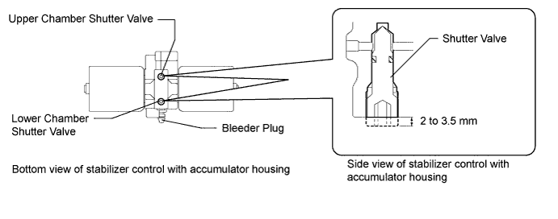
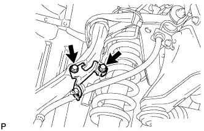
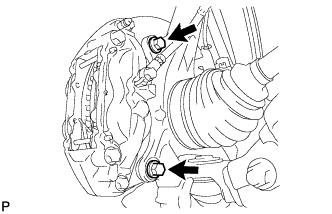
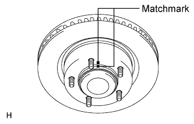
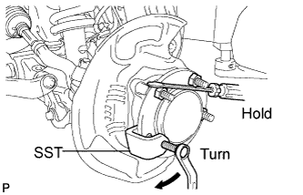
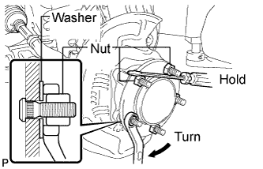
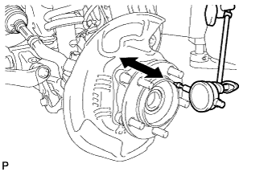
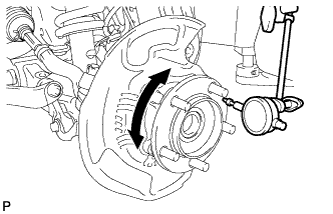
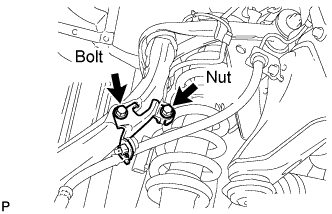

FRONT AXLE HUB BOLT > REPLACEMENT |
| 1. REMOVE STABILIZER CONTROL VALVE PROTECTOR (w/ KDSS) |
 |
Detach the clamp, and disconnect the connector from the protector.
Remove the 3 bolts and protector.
| 2. OPEN STABILIZER CONTROL WITH ACCUMULATOR HOUSING SHUTTER VALVE (w/ KDSS) |
Using a 5 mm hexagon socket wrench, loosen the lower and upper chamber shutter valves of the stabilizer control with accumulator housing 2.0 to 3.5 turns.

| 3. REMOVE FRONT WHEEL |
| 4. DISCONNECT FRONT DISC BRAKE CALIPER ASSEMBLY LH |
 |
Remove the bolt and nut, and disconnect the brake tube bracket from the steering knuckle.
 |
Remove the 2 bolts and disconnect the disc brake caliper from the steering knuckle.
| 5. REMOVE FRONT DISC |
 |
Put matchmarks on the front disc and axle hub if planning to reuse the disc.
Remove the front disc.
| 6. REMOVE FRONT AXLE HUB BOLT LH |
 |
Using SST and a screwdriver or equivalent to hold the axle hub, remove the front axle hub bolt.
| 7. INSTALL FRONT AXLE HUB BOLT LH |
 |
Temporarily install a washer and hub nut to a new hub bolt as shown in the illustration.
Using a screwdriver or equivalent to hold the hub, turn the hub nut until the bottom surface of the hub bolt head touches the axle hub.
Remove the washer and hub nut.
| 8. INSPECT FRONT AXLE HUB BEARING LOOSENESS |
 |
Using a dial indicator, measure the looseness near the center of the axle hub.
| 9. INSPECT FRONT AXLE HUB RUNOUT |
 |
Using a dial indicator, measure the runout on the surface of the axle hub outside the hub bolt.
| 10. INSTALL FRONT DISC |
Align the matchmarks, and then install the front disc.
| 11. CONNECT FRONT DISC BRAKE CALIPER ASSEMBLY LH |
Connect the front disc brake caliper and install 2 new bolts.
 |
Connect the brake tube bracket to the steering knuckle with the bolt and nut.
| 12. INSTALL FRONT WHEEL |
| 13. MEASURE VEHICLE HEIGHT (w/ KDSS) |
Set the tire pressure to the specified value(s) (Click here).
Bounce the vehicle to stabilize the suspension.
 |
Measure the distance from the ground to the top of the bumper and calculate the difference in the vehicle height between left and right. Perform this procedure for both the front and rear wheels.
| 14. CLOSE STABILIZER CONTROL WITH ACCUMULATOR HOUSING SHUTTER VALVE (w/ KDSS) |
Using a 5 mm hexagon socket wrench, tighten the lower and upper chamber shutter valves of the stabilizer control with accumulator housing.
| 15. INSTALL STABILIZER CONTROL VALVE PROTECTOR (w/ KDSS) |
|
Install the valve protector with the 3 bolts.
Attach the clamp, and connect the connector to the valve protector.